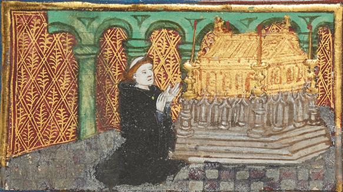

The Minor Works of John Lydgate
a Virtual Archive
Matthew Evan Davis, Editor
HomeAbout the ArchiveAbout John LydgateWorksManuscriptsContactVisualization
Welcome to a virtual archive of the "minor" works of the fifteenth-century poet, John Lydgate.
The goals of this project are twofold: first, it is an attempt to make some version of the manuscripts and other media containing the works of Lydgate that exist in less than twenty witnesses more accessible to scholars of the poet, students who may have only read them in print editions, and individuals interested in manuscripts as artifacts in their own right. To this end, it is intended to provide not a critical edition of these poems, but to accurately transcribe and record the variations in the witnesses – changes in the language, omissions, and insertions – that are obscured sometimes by the traditional editorial process, without privileging one witness over another. In this way the project might be considered an archive as Trevor Owens describes it, as "effectively ... a kind of collection of materials that hang together for a very particular reason."
Second, this project is meant to bridge a gap between the digital world, where anything that cannot be concretely categorized is often left by the wayside, and the physical object with its rich set of significations. This goal is less about the archive as understood by the methodologies of archival theory or concentration on and analysis of textual content. Instead, it is an attempt at praxis regarding some theories about how to best preserve the messy, analogue, digitally liminal aspects of the physical object that also encode meaning. To this end, rather than the standard TEI document schema, which privileges the content of the text on the page and renders secondary presentation, paratext, and physical structure of the material object An alternative TEI schema privileging the manuscript page as an object alongside its textual content has been used throughout. Additionally, visualizations, icons, and other tools have been or are planned to be used to continually remind the viewer of the materiality of these items. In this way, the hope is that the physical object is described and displayed virtually in a way that preserves the social, interdisciplinary, and historical connections made by the physical object itself while also holding to common and accepted metadata standards.

Except where otherwise noted, this work is licensed under a Creative Commons Attribution-NonCommercial-ShareAlike 4.0 International
License.